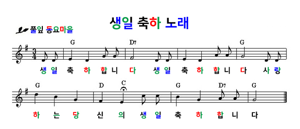
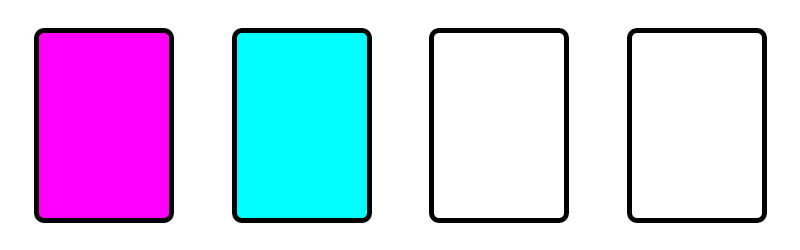

"정답은 을유년이었어."
"2005라는 숫자만 적혀 있어서 이게 무슨 의미인가 했지만, 힌트랑 조합해보니 정답을 찾을 수 있었어!"
"해의 다른 이름, 즉 숫자 2005는 2005년을 의미하는 거고 2005년의 다른 이름은 바로 '을유년'을 말하는 거였어!"
"올해가 2022년이기도 하지만 십이간지를 이용해서 임인년이기도 한 것처럼 말이야."
정답을 입력하자 다음 페이지로 넘어가며, 두 번째 미궁을 탈출할 수 있었다.
전혀 그런 의미가 아니지만, 같은 을로 시작하는 만큼 갑자기 페이지가 검정색으로 변하면서 을씨년스러운 분위기로 바뀌었다.
대체 종잡을 수가 없는 미궁 게임이었다.
언니들이 이런 것을 만들다니...
평가는 나중에 하고, 일단 다음 미궁으로 넘어가기 위해 페이지를 살펴보니 생일 축하 악보와 3색 카드가 놓여 있었다.


Hint: 빛의 3원색과 순서.
Copyrightⓒ 다락. All rights reserved.